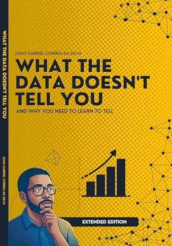

ENGENHARIA · DADOS · CRIATIVIDADE
João GabrielCorrêa da Silva.
Dados viram decisões.
Tecnologia vira impacto.
Exploro o encontro entre análise e criatividade. E compartilho o que aprendo em livros, conversas e código.

Dentro das histórias.↗
01IDEIAS NO PAPEL
Edição em português
Livros
Duas perspectivas. Um universo de dados.DADOS · NARRATIVA · INFLUÊNCIA
O que os dados
não dizem.
E por que você precisa aprender a contar
Transforme análises em decisões, dashboards em narrativas e relatórios em impacto real. Um guia para comunicar o que os números, sozinhos, não conseguem dizer.
O QUE VOCÊ VAI EXPLORAR
- Narrativas que engajam e convencem
- Visualização e comunicação com dados
- Persuasão para públicos estratégicos
02POR TRÁS DOS DADOS
Engenheiro por formação.
Curioso por natureza.
Sou João Gabriel, engenheiro, autor e profissional de dados e inteligência artificial. Minha trajetória conecta performance industrial, finanças e tecnologia — sempre com o olhar voltado para problemas reais.
Acredito que conhecimento ganha valor quando é compartilhado. Por isso, escrevo, desenvolvo projetos e abro conversas sobre como transformar análise em ação.
“Apaixonado por resolver problemas com dados, tecnologia e propósito.”
03APERTE O PLAY. AMPLIE O OLHAR.
Bytes
Estratégicos.
Conversas sobre dados, tecnologia e as ideias que movem o mundo dos negócios.
Todos os episódios↗Carregando episódios…
Conteúdo original em português.
04DA IDEIA AO CÓDIGO
Curiosidade
na prática.
Experimentos, ferramentas e projetos. Um pouco do que acontece quando uma pergunta vira código.
Explorar o GitHub↗Carregando projetos…
05A PRÓXIMA IDEIA COMEÇA COM UMA CONVERSA
Vamos criar
conexões?
Para trocar ideias, compartilhar conhecimento ou construir algo juntos. A conversa continua por aqui.
Vamos conversar no LinkedIn↗BE THE
CHANGE.